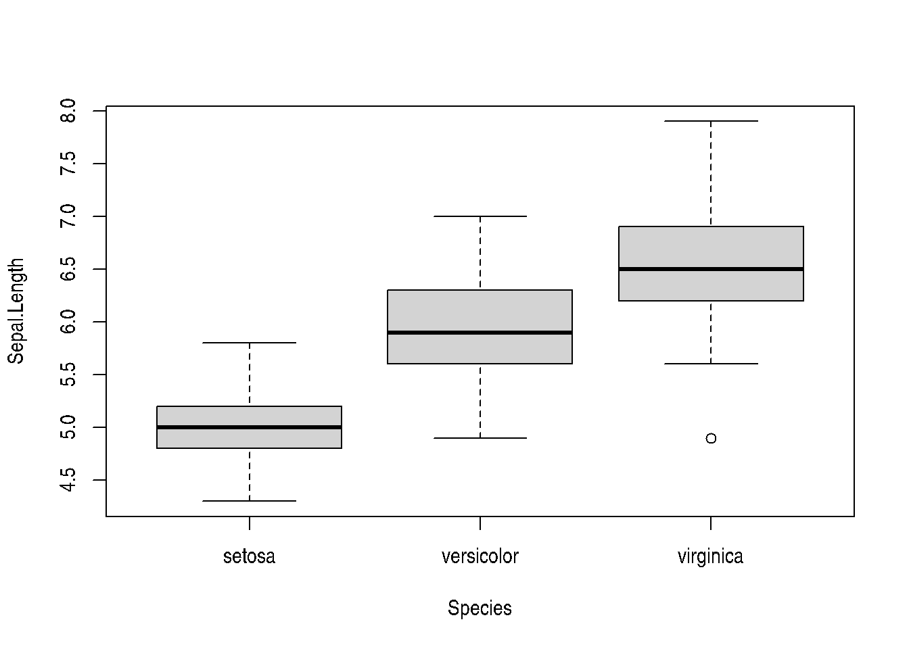

1 + 1[1] 2Quarto follows the markdown and rmarkdown conventions of literate programming, where code and text are combined for reproducible reporting. In other words, the analytical pipeline is embedded in the report and the code is run every time the report is compiled, so that you don’t have to produce results separately and then include them in a one-time-only report. This way, using Quarto assists in building a reproducible analytical worflow.
The markdown syntax is a powerful that lets you add many different things to your report. Here we go through a few of the elements.
Titles, defined with #; you can also make subtitles, subsubtitles and even lower-level headings by using more hashes, so ### my subsubsection would be 3rd-level heading
Lists, like this one; you can make unordered lists with * for each item, or ordered lists with 1., 2., 3. and so on
Links, which are made with [text](url)
When you click the Render button a document will be generated that includes both content and the output of embedded code. You can embed code like this:
1 + 1[1] 2Figures and tables returned as output of your code can be easily embedded to the report and cross-referenced from other parts of the report. Here we show it with the iris dataset.
data(iris)Below is a boxplot of flower sepal length by species (see Figure 1). You can add cross-references to figures and tables with the syntax @chunk-label, which is further discussed in Section 3.2. Other items such as sections, equations and publications can be referenced as well as explained here.
boxplot(Sepal.Length ~ Species, data = iris)
Similarly, tables can also be included and cross-referenced, demonstrated with Table 1 where the number of observations per flower species are shown.
knitr::kable(table(iris$Species))| Var1 | Freq |
|---|---|
| setosa | 50 |
| versicolor | 50 |
| virginica | 50 |
You can add options to executable code like this:
[1] 4The echo: false option disables the printing of code (only output is displayed).
This are some of the knitr chunk options that I find most useful. A full list of options is available here.
label: gives a name to the code chunk, which comes handy for troubleshooting programs as well as adding cross-references (notice that chunks returning figures or tables need a special prefix fig- and tbl-, respectively)
echo / include: the former hides the code but shows the output, whereas the latter hides both the code and the output
eval: whether to evaluate or not the code
message / warning: hide messages or warnings returned by the code, respectively
fig / tbl: this one is not really an option, but you have to add this prefix to a label so that it is recognised as figure or table, respectively
fig-cap / tbl-cap: define caption for figure or table, respectively
fig-width + fig-asp: the former defines the width of an image, whereas the latter sets its aspect ratio so that fig-height = fig-width * fig-asp, so these two make a great combo to guess the correct size for your plots
fig.path: indicates the relative path to which figures should be saved
If you are too lazy to set knitr options for every single chunk, don’t worry! knitr has the solution for you. Just specify global options for the entire document on the very top upstream like this:
# set message and warning to false and specify folder where figures should be saved for the entire document (put upstream everything)
knitr::opts_chunk$set(message = FALSE, warning = FALSE,
fig.path = "my/fig/dir")At the beginning of the raw document, you’ll see a box delimited by ---. There you can define document metadata like title, author, date, but also more advanced execution options such as output format, bibliography and citation style, theme, font size and many others. A full list of available parameters can be found here.
We have gathered learning material about Quarto in this chapter of the OMA book. We encourage you to look into it.
When you feel ready for challenge, go have a look at our exercises about Quarto in the OMA book. Feel free to ask if you’d like to discuss the solution strategy.